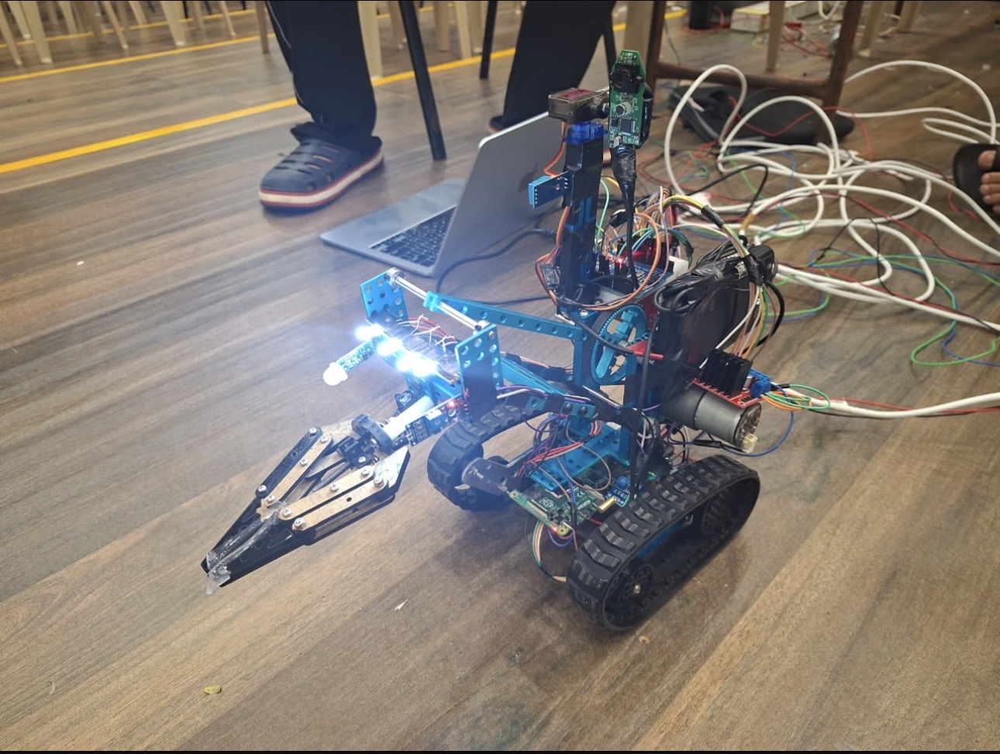
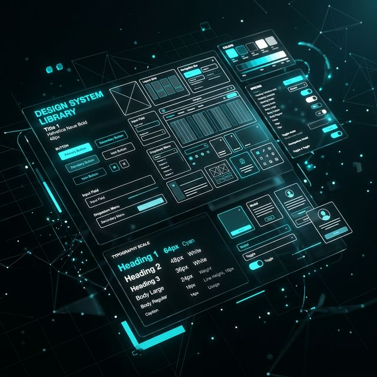

Hi, I'm
Tushaar
Bharara.
Developer · Builder · Engineer
Bridging the gap between software and the physical world through full-stack web apps, robotics, and machine learning.
Passionate about building things that matter.
I am currently a first-year B.Tech student in Computer Science and Engineering with a specialization in Data Science at Vellore Institute of Technology (VIT). I am a passionate developer and problem-solver with a deep interest in bridging the gap between software and the physical world.
My technical journey is driven by a love for building — whether it's developing full-stack web applications using the MERN stack, programming Arduino and Raspberry Pi for robotics, or diving into the complexities of Machine Learning and Data Structures. I am particularly drawn to creating technology that has a real-world impact.
Tech Stack
Projects that push boundaries.

Multi Terrain Rover
A disaster-rescue rover built on Raspberry Pi and Arduino Uno. Features sensors for detecting invisible fires and terrain instability, plus a custom camera module with live footage relay for object detection. Designed to make areas inaccessible to humans reachable during calamities.

CAE Laminate Solver
A specialized computational engine for analyzing the structural behavior of composite materials using Classical Laminate Theory. Calculates laminate stiffness and material selection indices with an AI-driven recommendation engine.
View Project →
Mess Management System
A platform tackling the problem of long queues at paid messes. Students can pre-order meals and pick them up without waiting in line, eliminating missed or late meals at VIT.
Important Classes.
Data Structures & Algorithms
Rigorous study of efficient algorithms and complex data structures — graph theory, combinatorics, logic — with a focus on C++. Applied Dijkstra's algorithm for pathfinding and Prim's/Kruskal's for network optimization in real-world scenarios.

Modern UI/UX Design & Frontend Systems
In-depth study of how systems interact with users. Wireframing & Prototyping in Figma, Performance Optimization, Accessibility & Responsiveness with a mobile-first mindset — applied to curate beautiful yet practical web applications.
Structured & Object-Oriented Programming
Transition from procedural to blueprint-based software development. Mastery of OOP pillars — Encapsulation, Abstraction, Inheritance, Polymorphism — building fault-tolerant, reusable systems in C++ and Python.
Beyond the code.
Echoes Of Mystery
Though not related to my work profile, it is one publication I am very proud of. It displays my passion for writing during the time I'm not coding. This story captures the divine powers of the state of Uttarakhand and how the dead can still speak. Inspired by true events, it's an exciting mythological thriller that blurs the line between the living and the beyond.
Read The Book →Resume Overview.
About Me
First-year undergraduate in B.Tech Computer Science & Engineering (Data Science). A passionate developer and problem solver with a strong interest in bridging the physical and digital worlds.
Research Interests
- Machine Learning & Data Science
- Full-Stack Web Development (MERN)
- Robotics (Arduino, Raspberry Pi)
- Data Structures & Algorithms
Education
B.Tech — CS & Engineering (Data Science)
Vellore Institute of Technology · 2025 – 2029
Honors & Awards
- Finalist — Devjams 2025
Hobbies & Activities
Robotics · Music (Music Club, VIT) · Reading · Writing (Echoes Of Mystery) · Travelling